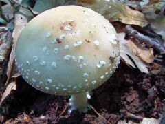

Párduc galóca
 Nem ehető
Nem ehető
Kalap: 5-10 (15) cm átmérőjű, félgömb alakú, majd ellaposodik. Halványszürkés, sötétbarna, felületén könnyen leváló fehér pettyek vannak, széle bordázott.
Lemezek: sűrűn és szabadon állók, felkanyarodók, fehérek.
Tönk: 6-15 cm hosszú, 0,5-2 cm vastag, hengeres, fehér, felülete finoman pelyhes, szálas, gyengén fejlett, lelógó, fehér gallérja van, bocskora nincs. A párkányszerűen peremes, gumós töve felett több pelyhes, gyűrűszerű zóna van.
Hús: puha, vizenyős, fehér, néha retekszagú, kissé édeskés ízű.
Előfordulás: júniustól novemberig, többnyiere savanyú talajú lomb- és fenyőerdőben növő, gyakori faj.
Étkezési érték: Mérgező. Méreganyaga az iboténsav.
